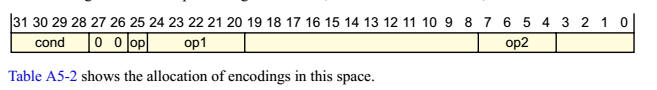
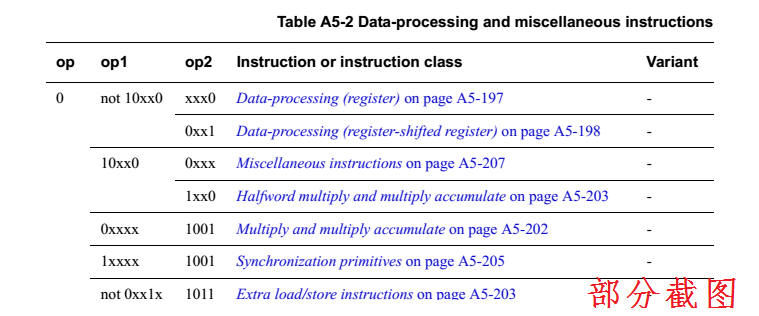

ARMv7机器指令说明
来源于文档rmv7_architecture_reference_manual
A5.1 ARM instruction set
encoding
The ARM
instruction stream is a sequence of word-aligned words.
Each ARM instruction is a single 32-bit word in that stream.
The encoding of an ARM instruction is:

Table A5-1
shows the major subdivisions of the ARM instruction set,
determined by bits[31:25, 4].
Most ARM instructions can be conditional, with a condition determined by
bits[31:28] of the instruction, the
cond
field. For more
information see
The condition code field.
This applies to all instructions except those with the cond field equal
to 0b1111.

下面我们详细看一个指令的定义，我们取“Data-processing and miscellaneous instructions on page A5-196”
A5.2 Data-processing and
miscellaneous instructions
The encoding of ARM data-processing instructions, and some
miscellaneous, instructions is:


A5.2.1 Data-processing
(register)
The encoding of ARM data-processing (register) instructions is:


A8.8.14 AND (register)
This instruction performs a bitwise AND
of a register value and an
optionally-shifted
register value, and
writes the result to the destination register.
It can optionally update the condition flags based on the result.


d表示目标地址，n表示操作数地址，m也是操作数地址
注：Encoding T1表示是Thumb 1的编码。

注：此处寄存器地址是用4个比特表示的，这意味着ARMv7寄存器最多是16个。
<Rm>寄存器中的数进行移位处理，然后与<Rn>寄存器中的数进行与，结果存在<Rd>寄存器中。
注：Encoding A1表示是Arm的编码。
DecodeImmShift是一个伪代码（Pseudocode）用于对程序功能进行准确的说明。
shift_t就是移位类型，shift_n就是移动多少位
A8.4.2 Register controlled shifts
These are only available in ARM
instructions.
<type>
is the type of shift to apply to the value read from
<Rm>. It must
be one of:
ASR
Arithmetic shift right, encoded as type =
0b10.
LSL
Logical shift left, encoded as type =
0b00.
LSR
Logical shift right, encoded as type =
0b01.
ROR
Rotate right, encoded as type = 0b11.
The bottom byte of <Rs>
contains the shift amount.
A8.4.3 Pseudocode details of
instruction-specified shifts and rotates
enumeration SRType {SRType_LSL,
SRType_LSR, SRType_ASR, SRType_ROR, SRType_RRX};
// DecodeImmShift()
// ================
(SRType, integer) DecodeImmShift(bits(2) type, bits(5) imm5)
case type of
when ‘00’
shift_t = SRType_LSL; shift_n = UInt(imm5);
when ‘01’
shift_t = SRType_LSR; shift_n = if imm5 == ‘00000’ then 32 else
UInt(imm5);
when ‘10’
shift_t = SRType_ASR; shift_n = if imm5 == ‘00000’ then 32 else
UInt(imm5);
when ‘11’
if imm5 == ‘00000’ then
shift_t = SRType_RRX; shift_n = 1;
else
shift_t = SRType_ROR; shift_n = UInt(imm5);
return (shift_t, shift_n);
思考：指令系统与运算速度？我国龙芯的指令系统集？